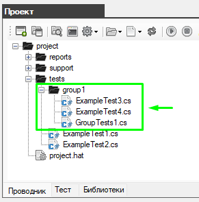
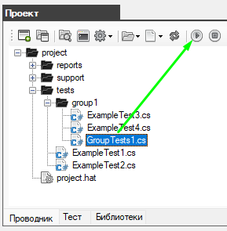
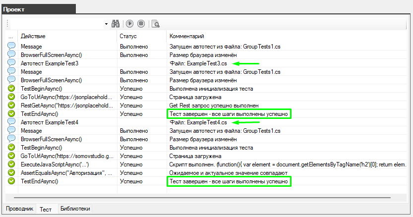
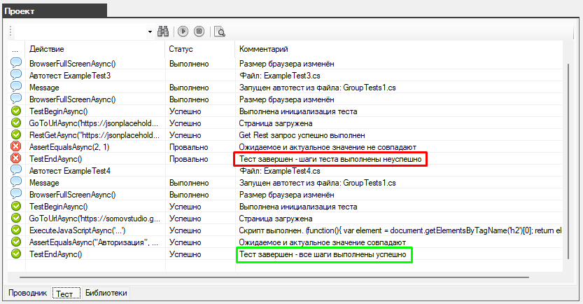
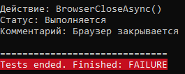
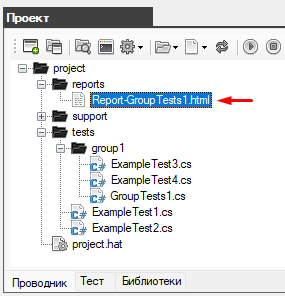
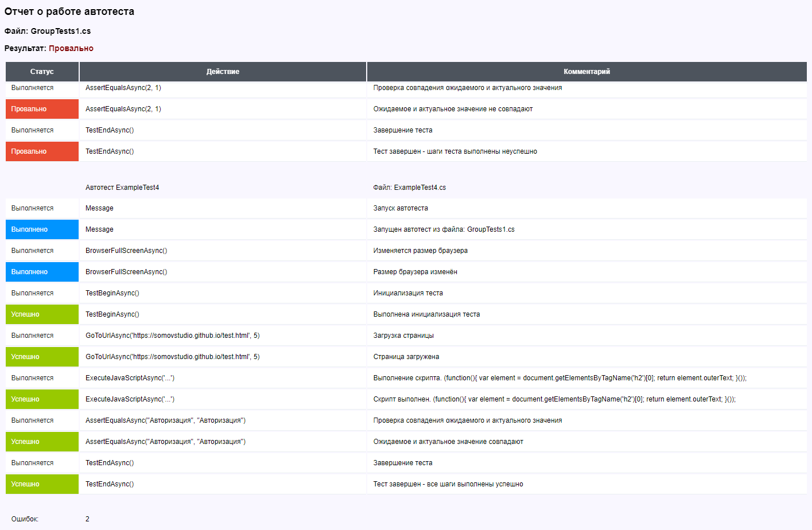

Группа автотестов
Вы можете организовать группу автотестов и запустить их одним автотестом.
Для этого нужно создать папку в которой будут храниться автотесты (например папка group1)

Далее необходимо описать несколько тестов и поместить их в папку group1.
Обратите внимание: у тестов функция Main должна быть объявлена как Task
первый файл ExampleTest3.cs
|
Файл: ExampleTest3.cs |
|
using System; using System.Collections.Generic; using System.ComponentModel; using System.Windows.Forms; using System.Threading; using System.Threading.Tasks; using System.IO; using System.Data; using System.Drawing; using System.Linq; using System.Text; using System.Text.RegularExpressions; using System.Net; using System.Net.Http; using System.Net.Http.Headers; using System.Reflection; using Newtonsoft.Json; using HatFramework; namespace Hat { public class TestJson { public int userId { get; set; } public int id { get; set; } public string title { get; set; } public string body { get; set; } }
public class ExampleTest3 { Tester tester; public async Task Main(Form browserWindow) { tester = new Tester(browserWindow); await setUp(); await test(); await tearDown(); } public async Task setUp() { await tester.BrowserFullScreenAsync(); } public async Task test() { await tester.TestBeginAsync(); await tester.GoToUrlAsync("https://jsonplaceholder.typicode.com", 5); string result = await tester.RestGetAsync(@"https://jsonplaceholder.typicode.com/posts/1/", "UTF-8"); TestJson dataJson = JsonConvert.DeserializeObject<TestJson>(result); tester.AssertEqualsAsync("1", dataJson.userId.ToString()); await tester.TestEndAsync(); } public async Task tearDown() { // await tester.BrowserCloseAsync(); } } } |
и второй файл ExampleTest4.cs
|
Файл: ExampleTest4.cs |
|
using System; using System.Collections.Generic; using System.ComponentModel; using System.Windows.Forms; using System.Threading; using System.Threading.Tasks; using System.IO; using System.Data; using System.Drawing; using System.Linq; using System.Text; using System.Text.RegularExpressions; using System.Net; using System.Net.Http; using System.Net.Http.Headers; using System.Reflection; using Newtonsoft.Json; using HatFramework; namespace Hat { public class ExampleTest4 { Tester tester; public async Task Main(Form browserWindow) { tester = new Tester(browserWindow); await setUp(); await test(); await tearDown(); } public async Task setUp() { await tester.BrowserFullScreenAsync(); } public async Task test() { await tester.TestBeginAsync(); await tester.GoToUrlAsync("https://somovstudio.github.io/test.html", 5); string script = @"(function(){ var element = document.getElementsByTagName('h2')[0]; return element.outerText; }());"; string actual = await tester.ExecuteJavaScriptAsync(script); string expected = "Авторизация"; await tester.AssertEqualsAsync(expected, actual); await tester.TestEndAsync(); } public async Task tearDown() { // await tester.BrowserCloseAsync(); } } } |
Теперь нужно создать объединяющий автотест GroupTests1.cs который будет вызывает другие автотесты.
|
Файл: GroupTests1.cs |
|
using System; using System.Collections.Generic; using System.ComponentModel; using System.Windows.Forms; using System.Threading; using System.Threading.Tasks; using System.IO; using System.Data; using System.Drawing; using System.Linq; using System.Text; using System.Text.RegularExpressions; using System.Net; using System.Net.Http; using System.Net.Http.Headers; using System.Reflection; using Newtonsoft.Json; using HatFramework; namespace Hat { public class GroupTests1 { Tester tester;
public async void Main(Form browserWindow) { tester = new Tester(browserWindow); await setUp(); await test1(browserWindow); await test2(browserWindow); await tearDown(); } public async Task setUp() { await tester.BrowserFullScreenAsync(); } public async Task test1(Form browserWindow) { tester.SendMessage("Автотест ExampleTest3", "", "Файл: ExampleTest3.cs", Tester.IMAGE_STATUS_MESSAGE); ExampleTest3 exampleTest3 = new ExampleTest3(); await exampleTest3.Main(browserWindow); }
public async Task test2(Form browserWindow) { tester.SendMessage("Автотест ExampleTest4", "", "Файл: ExampleTest4.cs", Tester.IMAGE_STATUS_MESSAGE); ExampleTest4 exampleTest4 = new ExampleTest4(); await exampleTest4.Main(browserWindow); }
public async Task tearDown() { await tester.BrowserCloseAsync(); } } } |
Как вы видите автотесты ExampleTest3.cs и ExampleTest4.cs будут последовательно вызываться в методах test1 и test2.
Запустите автотест GroupTests1.cs

В результат на вкладке "Тест" будет отражен весь ход последовательного выполнения всех автотестов шаг за шагом.

В случае если какой-то из автотестов будет выполнен неудачно, проверка всё равно продолжится пока не будут пройдены все автотесты

при этом общий результат работы группового автотеста GroupTests1.cs будет считаться провальным.

так же будет создан отчет о полном прохождении всех тестов


Created with the Personal Edition of HelpNDoc: Free help authoring environment